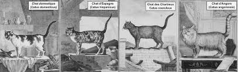
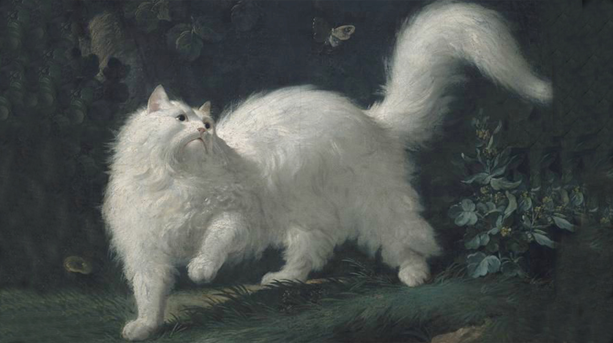
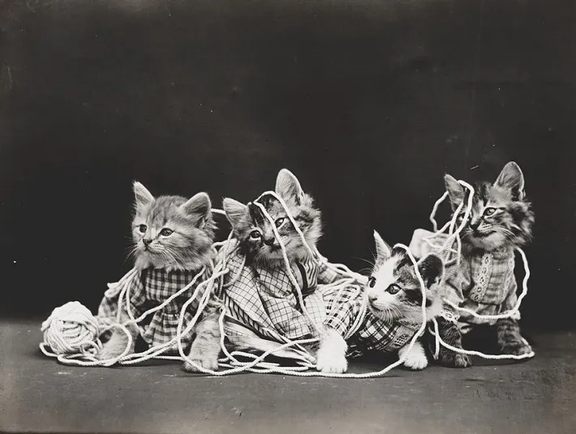

Compañeros silenciosos (Ilustración y siglo XIX)
En el siglo XVIII, se comenzó a mirar a los gatos de forma científica y sistemática. Fue aquí que se crearon las primeras clasificaciones en razas.

Primer inventario de razas: Catus domesticus, Catus angorensis, Catus hispanicus y Catus coeruleus.

Con los avances científicos del siglo XIX,
el gato dejó de ser sospechoso y se volvió ejemplo:
un animal limpio, que se acicala constantemente
y convive con los humanos sin peligro.

El gato se volvió un compañero indispensable y querido en los hogares de las élites.
volver a inicio
Continuar el recorrido